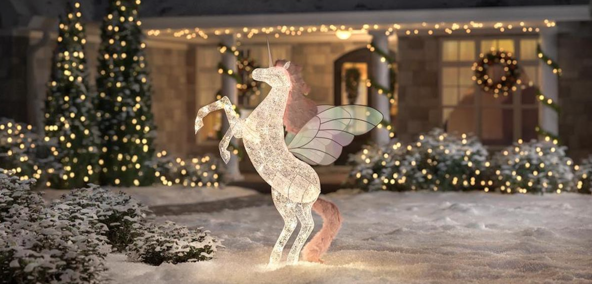

CHRISTMAS TALES
Immerse yourself in the enchanting world of Christmas tales with Lucky Shrub. Our holiday-inspired garden designs bring the magic of Christmas to life, creating festive atmospheres filled with joy and wonder. Let our team weave stories in your outdoor space, transforming it into a magical wonderland that will be remembered for years to come.